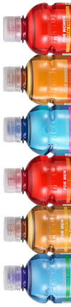

H10O Vitamin Infused Flavored Water FAQ's

Q. Why drink H10O?
H10O is a much healthier alternative to sugary soft drinks and other flavored juices and waters. H10O provides a unique combination of 10 Essential Natural Vitamins specially formulated to address the specific needs of women and men with NO SUGAR, NO CARBOHYDRATES and ZERO CALORIES. Plus, it counts towards your daily water intake.Q. H10O contains zero sugar, than what is it sweetened with?
H10O has 0 Calories, 0 Sugars and 0 Carbs. The sweetener used in H10O is Sucralose - more commonly known as Splenda, the preferred healthy choice for sweeteners. Sucralose is 600 times sweeter than sugar therefore, only a small amount is needed, and it is not absorbed by the body like sugar, so you can enjoy a guilt-free, good for you, great tasting, refreshing beverage.Q. How many flavors does H10O offer?
H10O offers 6 distinct flavors. The Flavors were chosen after extensive research on gender preferred flavors.
3 for Women – Peach Mango Tea, Berry Sport and Tropical Energy and, 3 for Men – Lemon Tea, Citrus Sport and Orange Energy.
H10O is a refreshing, lightly flavored enhanced water beverage that uses the finest 100% natural flavors and does not contain any dyes or carbonation.Q. In addition to the 6 different flavors, what is the difference between the Tea, Sport and Energy? H10O offers 3 specific blends for each gender:
- The Teas contain: naturally occurring caffeine.
- The Sports is more of a pure blend with no caffeine.
- The Energys contain: an ideal blend of Caffeine and Guarana (Gwa ra nah) Seed Extract to provide a mild, long lasting energy boost, without any sugary crash.
Q. What is the difference between the Women’s and Men’s formula?
Founder - Max Recone decided to offer H10O for Women and Men because he felt there was a need for gender specific Essential Vitamin waters. Both Women and Men formulas contain 10 Essential Vitamins, with 2 of those 10 being different between the women and men.
All Women’s formulas contain:
- Vitamin B-7 – an important vitamin in the metabolism of carbohydrates and fats
- Vitamin B-9 – an energy and metabolism booster
Men’s formulas contain:
- Vitamin C – a strong anti-oxidant that also builds collagen which builds stronger bone, muscle and cartilage
- Vitamin B-2 – which activates other vitamins to convert carbohydrates to energy in the body
Q. Can men drink the women’s blend and vice versa?
Of course! All the ingredients are safe for anyone to consume. However, the 2 different Essential Vitamins may provide slightly more benefit to one gender than the other.Q. Does drinking H10O replace the need for a multi-vitamin?
No. No vitamin water on the market can provide the full spectrum of the recommended daily vitamins. Some vitamins are fat soluble and simply cannot dissolve in water. H10O provides hydration and a unique combination of vitamins that tastes good, looks good.Q. Why does H10O cost more than Vitamin Water?
More vitamins. Better packaging - bottle tint, UV stabilizer and labeling.Q. Some bottled waters use tap water, what about H10O
Our bottler, Adirondack Beverages of NY is ISO 9001 Certified. Adirondack uses naturally pure water from an underground reservoir called:” The Great Flats Aquifer”, NOT municipal water. The Aquifer water is then filtered using the “Reverse Osmosis” method to remove any chemicals or dissolved minerals such as iron or calcium prior to making H10O to insure that H10O is as pure as possible.Q. What is the difference between H10O and other Vitamin Waters?
H10O has 0 Calories, 0 Sugars and 0 Carbs. H10O has 10 Essential Natural Vitamins. H10O has Natural Flavors. H10O uses The Great Flats Aquifer water which is then filtered; Not tap water. H10O offers gender specific vitamins, and, H10O has 6 great tasting flavors!